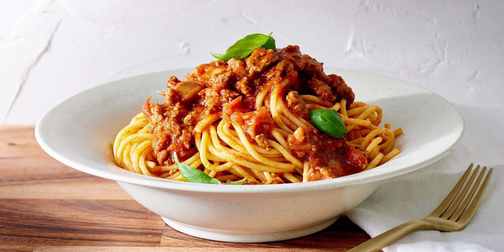

Spaghetti Aglio e Olio
Spaghetti Aglio e Olio is a classic Italian pasta dish that's incredibly simple to make. It features spaghetti tossed in a garlic-infused olive oil sauce, with a touch of chilli and a sprinkle of Parmesan cheese.

Ingredients
- 400g spaghetti
- 4 cloves garlic, thinly sliced
- 60ml (4 tablespoons) olive oil
- 1 teaspoon red chilli flakes (adjust to taste)
- Salt and pepper to taste
- Fresh parsley, chopped (optional)
- Grated Parmesan cheese (optional)
Step 1: Cook the Spaghetti
- Boil a large pot of salted water.
- Add the spaghetti and cook according to the package instructions until al dente.
- Reserve about 120ml (half a cup) of the pasta water before draining.
Step 2: Prepare the Garlic Oil
- While the pasta is cooking, heat the olive oil in a large pan over medium heat.
- Add the sliced garlic and sauté until golden brown, being careful not to burn it.
- Add the red chilli flakes and cook for another 30 seconds to infuse the oil with spice.
Step 3: Combine and Serve
- Toss the drained spaghetti in the garlic oil, adding a little of the reserved pasta water to help coat the pasta.
- Season with salt and pepper to taste.
- Garnish with chopped parsley and a sprinkle of grated Parmesan cheese if desired.
- Serve immediately while hot.